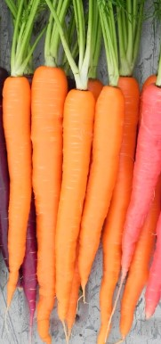
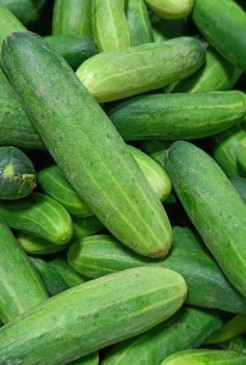

Вітрина 1: Інтерактивна


Вітрина 2: Статична
Перець - гострий та солодкий овоч, багатий на вітамін C.
Броколі - зелений овоч, відомий своїми антиоксидантними властивостями.
Картопля - основний продукт харчування, багатий на вуглеводи.